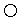

Choices to compute the "Geometry" record for a ThickEdgedOrifice.
Extends from Modelica.Icons.Package (Icon for standard packages).
| Name | Description |
|---|---|
|  circular | Circular cross section |
| Rectangular cross section | |
| general | General cross section |
Function that returns the ThickEdgedOrifice.Geometry for a circular cross section of the orifice.
| Type | Name | Default | Description |
|---|---|---|---|
| Diameter | diameter | Inner diameter of circular orifice [m] | |
| Diameter | venaDiameter | Diameter of vena contraction [m] | |
| Length | venaLength | Length of vena contraction [m] |
| Type | Name | Description |
|---|---|---|
| Geometry | geometry | Geometry of circular thick edged orifice |
function circular "Circular cross section"
import SI = Modelica.SIunits;
import Modelica.Constants.pi;
input SI.Diameter diameter "Inner diameter of circular orifice";
input SI.Diameter venaDiameter "Diameter of vena contraction";
input SI.Length venaLength "Length of vena contraction";
output ThickEdgedOrifice.Geometry geometry
"Geometry of circular thick edged orifice";
algorithm
geometry.crossArea := diameter^2*pi/4;
geometry.perimeter := pi*diameter;
geometry.venaCrossArea := venaDiameter^2*pi/4;
geometry.venaPerimeter := pi*venaDiameter;
geometry.venaLength := venaLength;
end circular;
 Modelica.Fluid.Fittings.BaseClasses.Orifices.ThickEdgedOrifice.Choices.rectangular
Modelica.Fluid.Fittings.BaseClasses.Orifices.ThickEdgedOrifice.Choices.rectangular
Function that returns the ThickEdgedOrifice.Geometry for a rectangular cross section of the orifice.
| Type | Name | Default | Description |
|---|---|---|---|
| Length | width | Inner width of rectangular orifice [m] | |
| Length | height | Inner height of rectangular orifice [m] | |
| Length | venaWidth | Width of vena contraction [m] | |
| Length | venaHeight | Height of vena contraction [m] | |
| Length | venaLength | Length of vena contraction [m] |
| Type | Name | Description |
|---|---|---|
| Geometry | geometry | Geometry of circular thick edged orifice |
function rectangular "Rectangular cross section"
import SI = Modelica.SIunits;
import Modelica.Constants.pi;
input SI.Length width "Inner width of rectangular orifice";
input SI.Length height "Inner height of rectangular orifice";
input SI.Length venaWidth "Width of vena contraction";
input SI.Length venaHeight "Height of vena contraction";
input SI.Length venaLength "Length of vena contraction";
output ThickEdgedOrifice.Geometry geometry
"Geometry of circular thick edged orifice";
algorithm
geometry.crossArea := width*height;
geometry.perimeter := 2*width + 2*height;
geometry.venaCrossArea := venaWidth*venaHeight;
geometry.venaPerimeter := 2*venaWidth + 2*venaHeight;
geometry.venaLength := venaLength;
end rectangular;
Function that returns the ThickEdgedOrifice.Geometry for a general cross section of the orifice.
| Type | Name | Default | Description |
|---|---|---|---|
| Area | crossArea | Inner cross sectional area [m2] | |
| Length | perimeter | Inner perimeter [m] | |
| Area | venaCrossArea | Cross sectional area of vena contraction [m2] | |
| Length | venaPerimeter | Perimeter of vena contraction [m] | |
| Length | venaLength | Length of vena contraction [m] |
| Type | Name | Description |
|---|---|---|
| Geometry | geometry | Geometry of circular thick edged orifice |
function general "General cross section"
import SI = Modelica.SIunits;
import Modelica.Constants.pi;
input SI.Area crossArea "Inner cross sectional area";
input SI.Length perimeter "Inner perimeter";
input SI.Area venaCrossArea "Cross sectional area of vena contraction";
input SI.Length venaPerimeter "Perimeter of vena contraction";
input SI.Length venaLength "Length of vena contraction";
output ThickEdgedOrifice.Geometry geometry
"Geometry of circular thick edged orifice";
algorithm
geometry.crossArea := crossArea;
geometry.perimeter := perimeter;
geometry.venaCrossArea := venaCrossArea;
geometry.venaPerimeter := venaPerimeter;
geometry.venaLength := venaLength;
end general;